Documentación
Todo lo necesario para probar la demostración sin instalar herramientas de desarrollo, y dónde mirar en el código si quieres ir más a fondo.
Pruébalo en cinco minutos
Necesitas un teléfono Android y las dos credenciales que recibiste por correo de mi parte: una de cliente, para la aplicación, y una de administrador, para la consola. En este sitio no hay credenciales.
Si prefieres verlo antes de probarlo, el video de demostración es un recorrido narrado de la aplicación y la consola.
- Instala la aplicaciónAbre en el teléfono el instalador que recibiste junto con las credenciales. Ábrelo en un teléfono con Android 7.0 o superior. Android pedirá permiso para instalar aplicaciones de origen desconocido.
- Entra como clienteToca «Ya soy cliente» y usa las credenciales de cliente del correo. Verás el inicio con el saldo, las cuentas y los últimos movimientos.
- Abre la consolaEn un ordenador, abre el backoffice e inicia sesión con las credenciales de administrador del correo.
- Elige el segmento «Estoy empezando»Es el segmento del cliente de demostración; la consola lo muestra con «1 cliente». Los cambios se aplican al segmento seleccionado.
- Mueve un módulo y publicaEn «Inicio», baja «Saldo total» con las flechas y pulsa «Publicar cambios».
- Mira el teléfonoEl inicio se reordena en unos segundos, sin cerrar ni actualizar la aplicación. En Perfil, la tarjeta de diagnóstico muestra el mismo número de versión que la consola, que sube en uno con cada publicación.
Dos cosas más que vale la pena probar
- Apagar «Transferencias». En «Funcionalidades», apaga el interruptor y publica. El botón «Transferir» desaparece del inicio, del detalle de cuenta y de Servicios; al encenderlo y publicar, vuelve.
- El laboratorio de resiliencia. En «Resiliencia», marca «Servicio de movimientos no disponible» y publica: los movimientos muestran su propio aviso con «Reintentar» mientras el saldo y las cuentas siguen visibles. Sube la latencia simulada y aparece el aviso de conexión lenta. Deja todo apagado al terminar.
Sin conexión. Pon el teléfono en modo avión: el inicio muestra los datos guardados con su antigüedad, y una transferencia queda «En cola» hasta que vuelva la red.
La aplicación en capturas
Todas son del mismo cliente de demostración, tomadas en un teléfono Android contra el servidor desplegado. Cada imagen se abre a tamaño completo.
Acceso
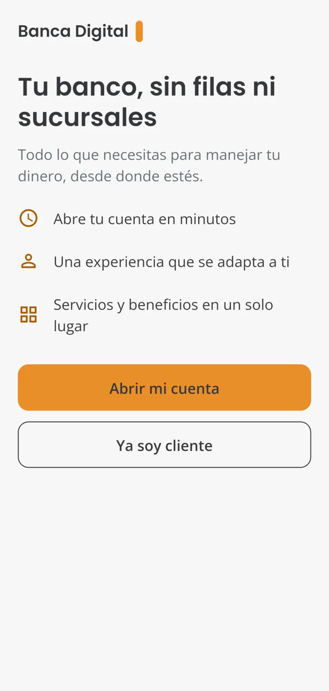
Bienvenida. 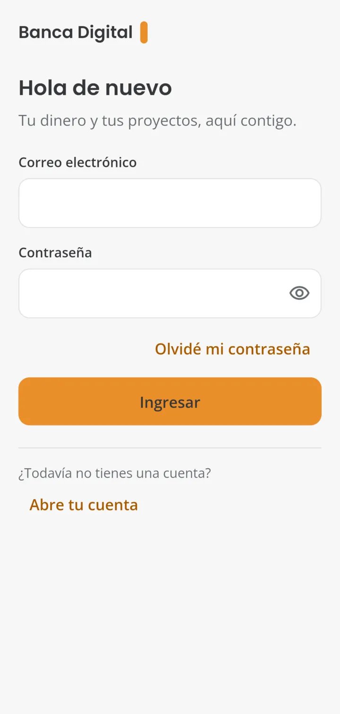
Ingreso con correo y contraseña. 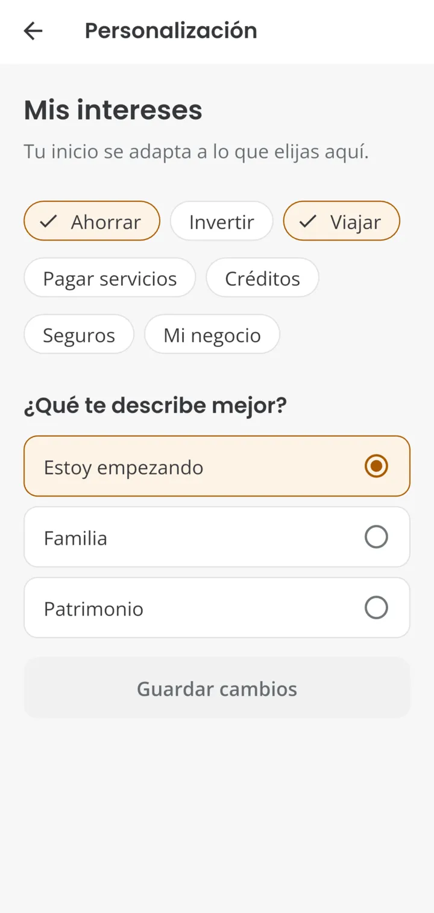
Intereses y segmento, que el cliente puede cambiar.


Inicio según el segmento

Segmento «Estoy empezando». 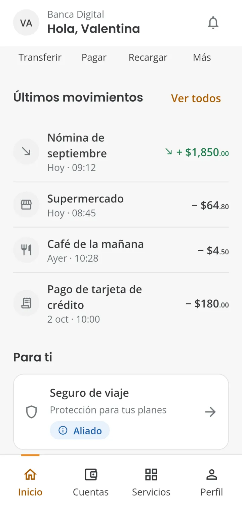
Más abajo, el módulo «Para ti». 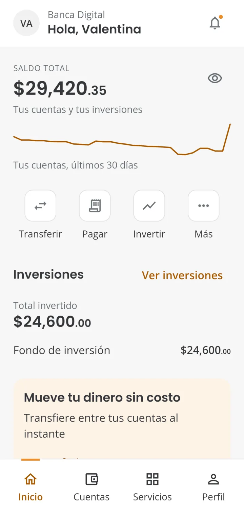
Segmento «Patrimonio»: los mismos componentes en otra composición.


Cuentas y movimientos
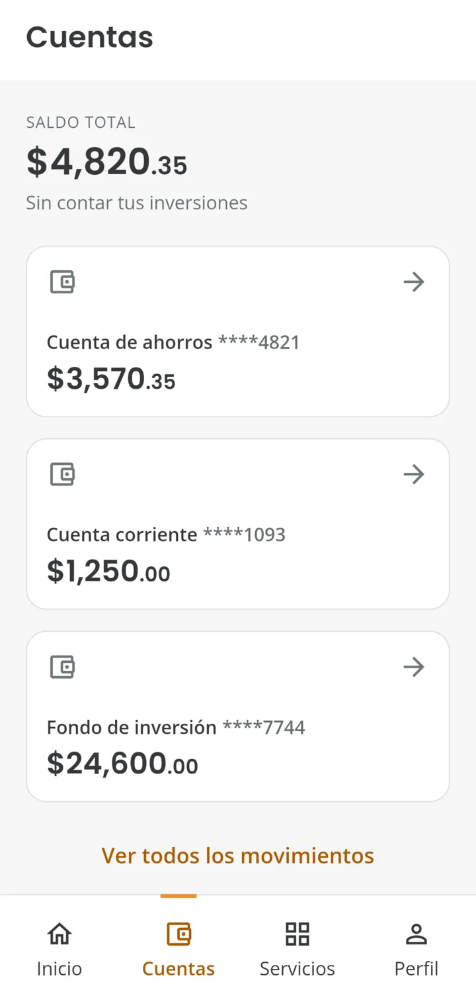
Cuentas. 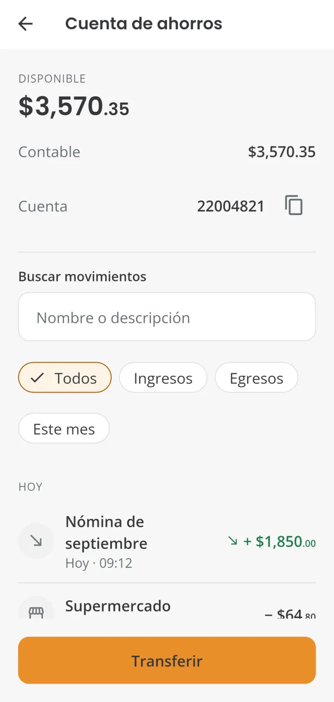
Detalle de una cuenta. 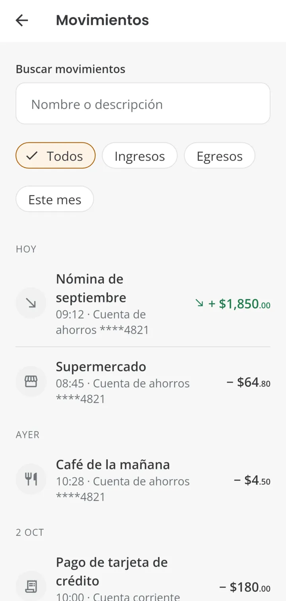
Todos los movimientos, con la cuenta de cada uno. 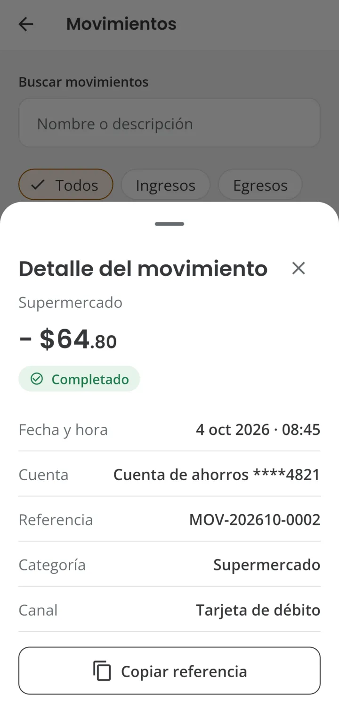
Detalle de un movimiento.


Transferencias
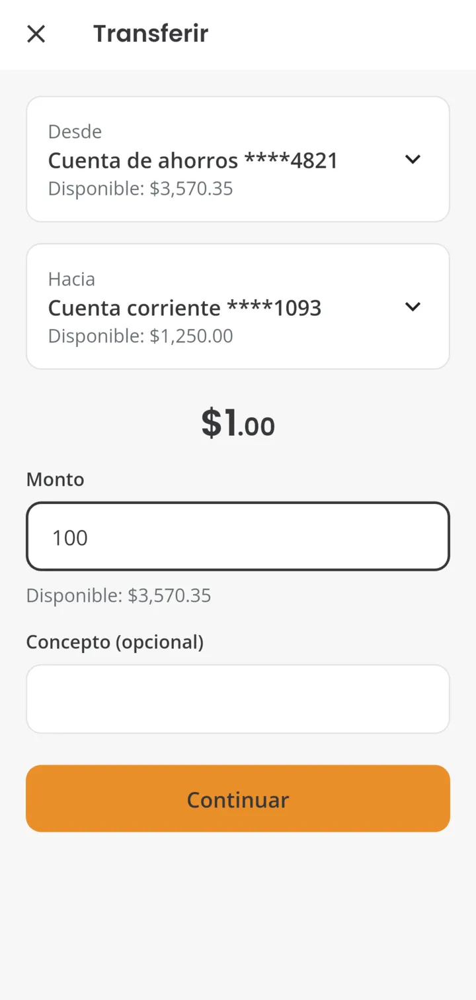
Formulario. El monto se escribe con el teclado de la pantalla: 1 es $1.00. 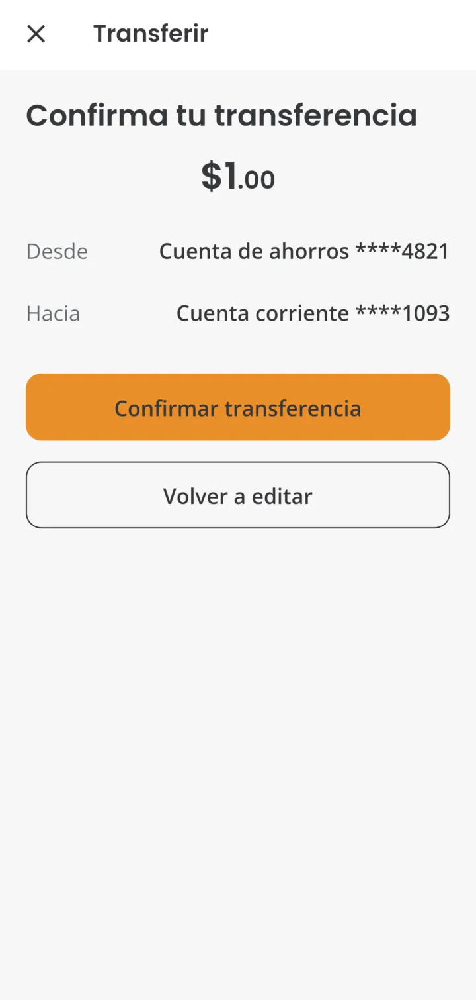
Confirmación. 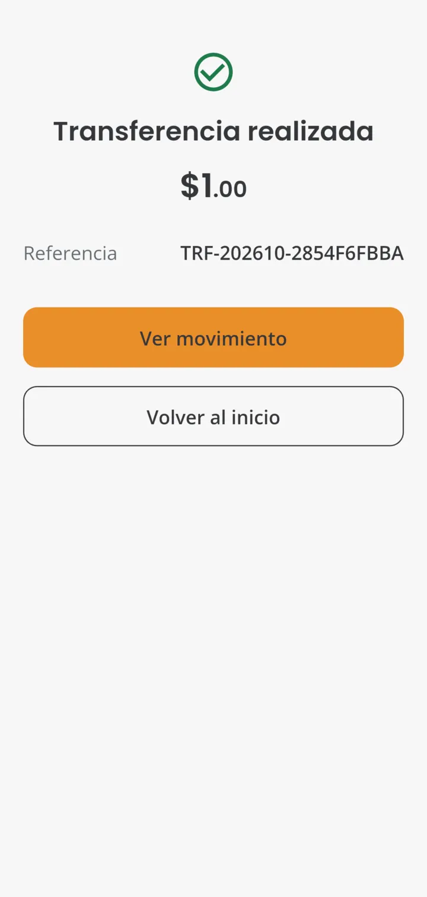
Resultado, con la referencia del servidor.


Sin conexión
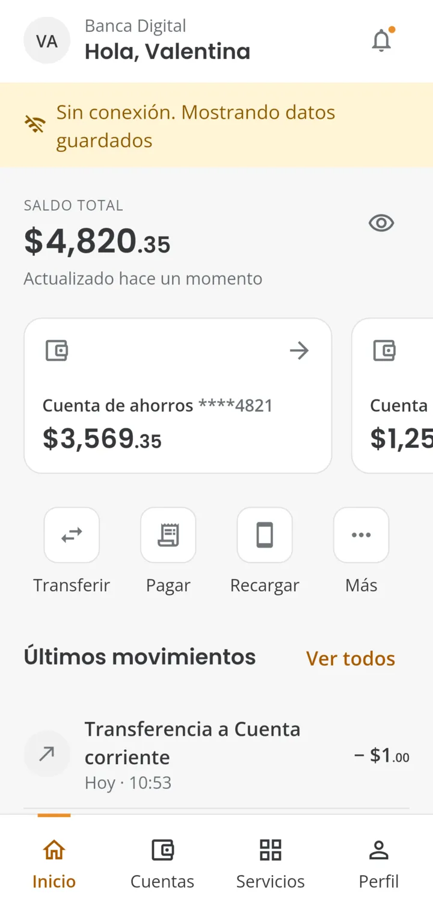
Inicio con datos guardados. 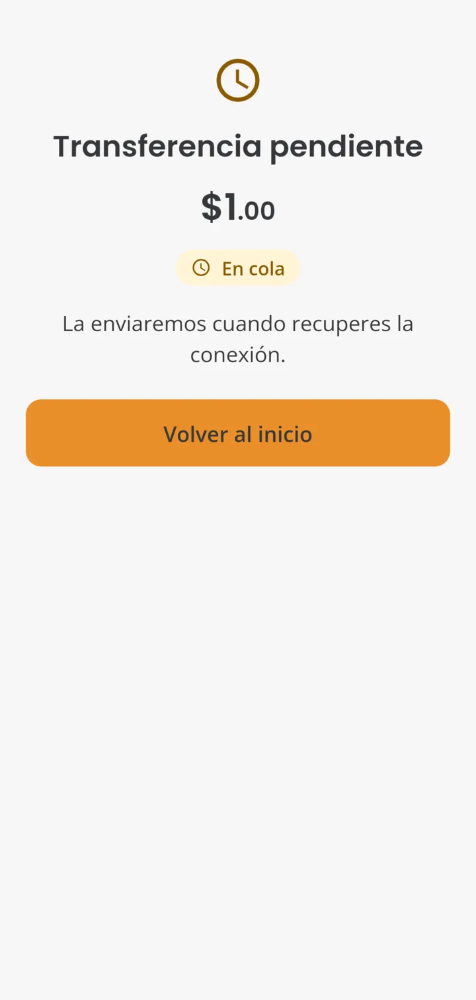
Una transferencia espera en cola.


Servicios, notificaciones y diagnóstico
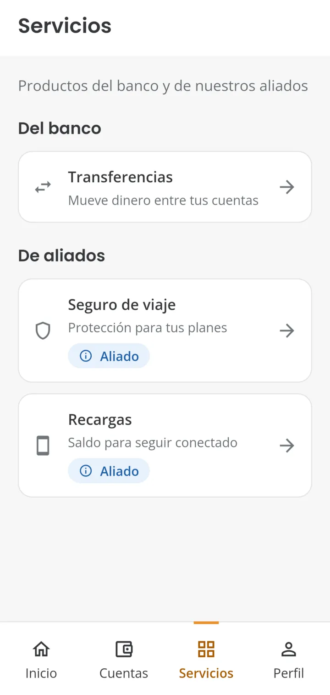
Servicios del banco y de aliados. 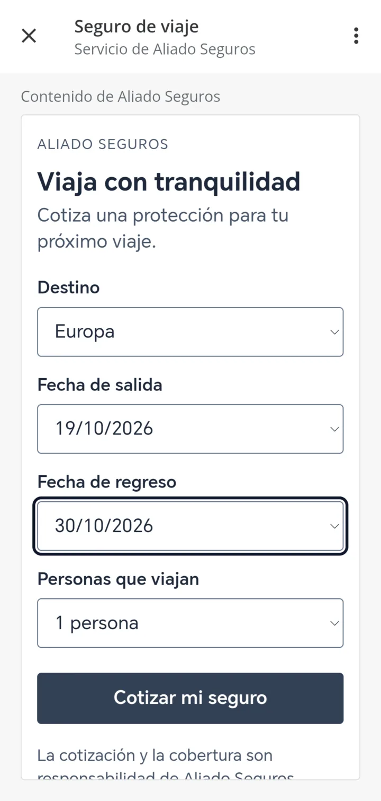
Mini aplicación de un aliado, con el formulario completado. La página sigue al desplazarse. 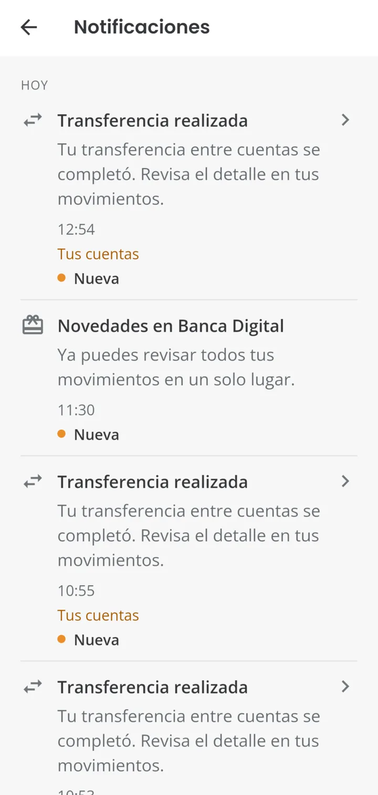
Bandeja de notificaciones: avisos de transferencia y «Novedades en Banca Digital», enviado desde la consola. 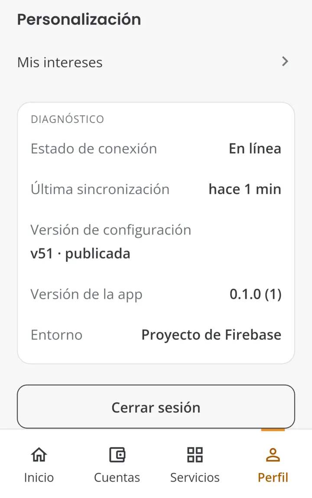
Diagnóstico en Perfil: la versión 51, la misma que muestra la consola antes de publicar.


Flujos principales
Quién hace qué en cada recorrido. Los diagramas de secuencia completos están en el repositorio, en docs/arquitectura/flujos.md.
Alta con apertura de cuentas
- ClienteCompleta tres pasos: datos, intereses y acceso.
- AplicaciónCrea el usuario y su perfil.
- AplicaciónPide al servidor que abra las cuentas.
- ServidorAbre ahorros y corriente una sola vez, aunque se lo pidan dos.
- AplicaciónMuestra las cuentas en cuanto existen.
Transferencia en línea
- AplicaciónGenera un identificador único para la orden.
- AplicaciónEnvía la orden con el token del cliente.
- ServidorValida y mueve el dinero en una sola transacción.
- ServidorResponde con la referencia y deja un aviso en la bandeja.
- AplicaciónMuestra el resultado y los dos movimientos.
Transferencia en cola, sin conexión
- AplicaciónSin red, guarda la orden como pendiente.
- ClienteVe «Transferencia pendiente», en cola.
- AplicaciónAl volver la red, pide al servidor que la procese.
- ServidorLa procesa una sola vez, aunque llegue repetida.
- AplicaciónMuestra el resultado y los movimientos.
Publicar configuración
- AdministradorEdita un segmento en la consola y publica.
- ServidorValida contra el contrato y comprueba la versión.
- ServidorGuarda la configuración con una versión nueva.
- AplicaciónLa recibe en tiempo real y la valida.
- AplicaciónRecompone el inicio sin reiniciarse.
Notificación con bandeja
- AdministradorEscribe el aviso y elige a quién va.
- ServidorLo guarda en la bandeja de cada destinatario.
- ServidorEnvía la notificación a los teléfonos registrados.
- ClienteLa toca y la aplicación abre su destino.
- AplicaciónLa marca como leída.
Mini aplicación de un aliado
- ClienteElige un servicio de un aliado.
- AplicaciónComprueba que el servicio está disponible.
- AplicaciónCarga la página del aliado en un contenedor propio.
- AplicaciónLe pasa solo el idioma y el segmento.
- AliadoAvisa cuando el cliente termina, con una referencia.
Guía de la consola
La consola edita un borrador de la configuración y lo publica. El borrador es uno solo aunque cambies de sección, y arriba siempre ves cuántos cambios faltan por publicar.

Lo que conviene saber antes de tocar nada
- Los cambios se aplican al segmento seleccionado. El cliente de demostración está en «Estoy empezando».
- Nada llega al teléfono hasta que publicas. «Descartar» vuelve a lo publicado.
- Si otra persona publica antes que tú, la consola rechaza tu publicación y pide recargar. No se pierde nada de lo publicado.
- Si sales con cambios sin publicar, el navegador pide confirmación.

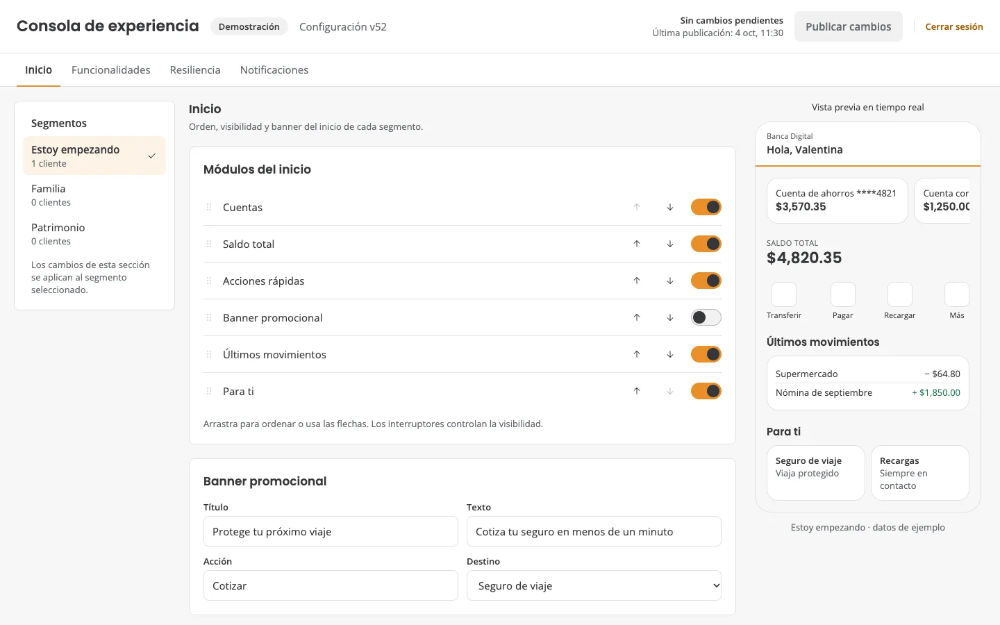
Acceso
Solo entran los administradores autorizados. Usa las credenciales de administrador que recibiste por correo.

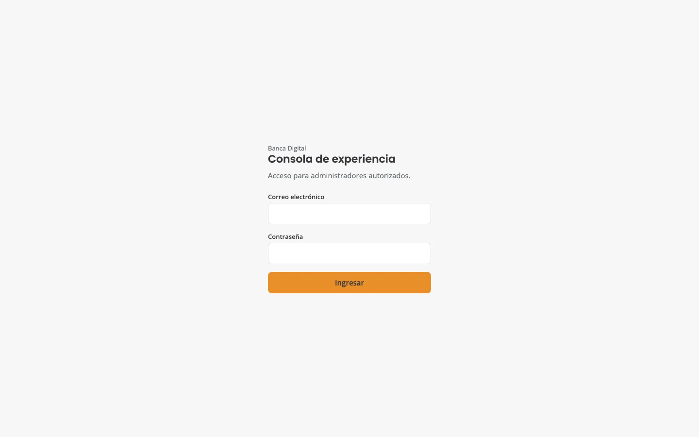
Inicio
Orden y visibilidad de los módulos del inicio, y el texto y destino del banner. La vista previa refleja el borrador.

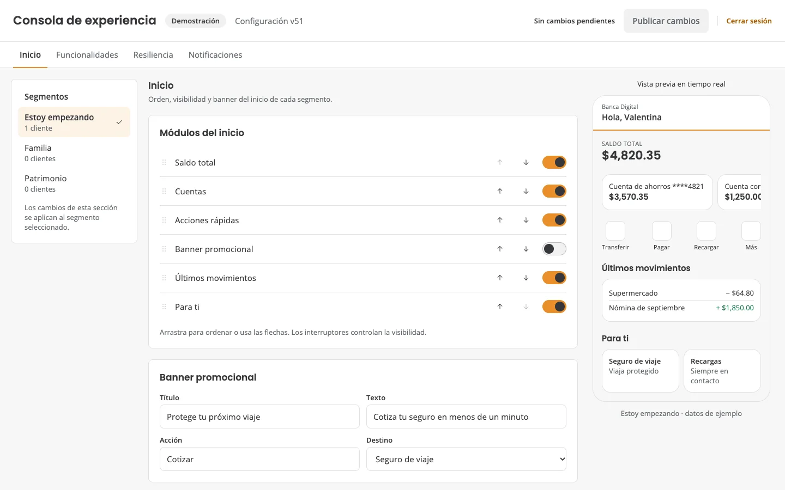
Funcionalidades
Enciende o apaga las transferencias y los servicios de aliados. Al apagar una, sus accesos desaparecen de la aplicación.

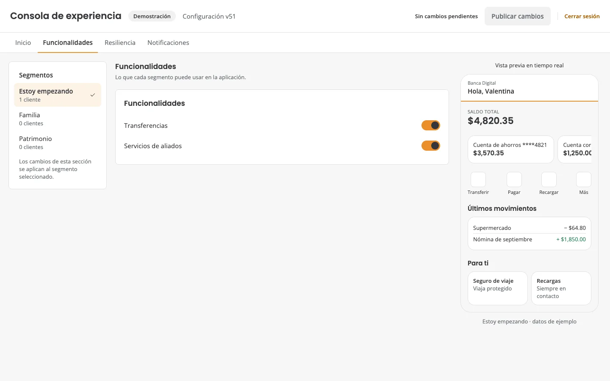
Resiliencia
Simula latencia y la caída de un servicio para ver cómo responde la aplicación. Solo existe en este entorno de demostración, y la aplicación solo lo obedece porque se compiló con esa opción.

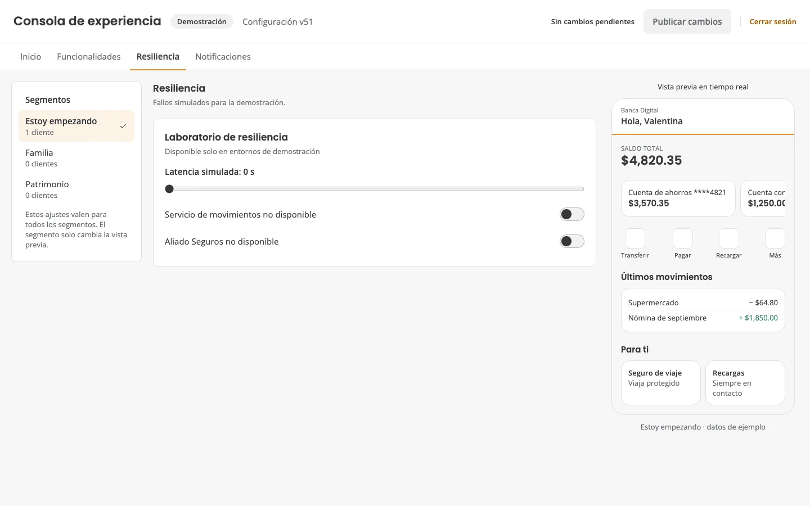
Notificaciones
Envía un aviso a un segmento o a un cliente y revisa el historial. No incluyas montos ni datos personales en el texto: puede verse con el teléfono bloqueado.

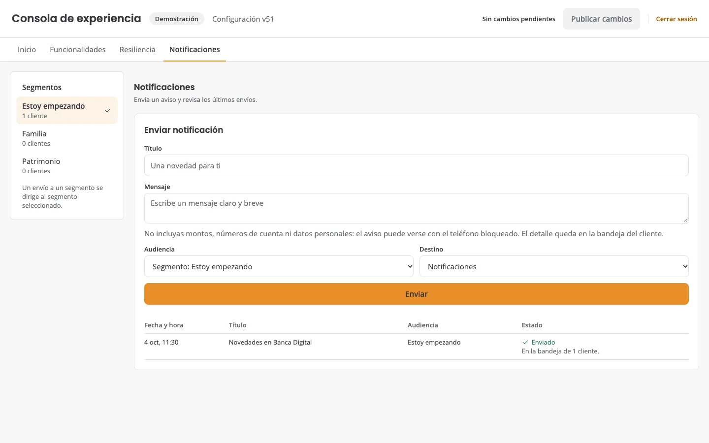
Qué mirar en el código
El repositorio es público. Estos son los puntos de entrada más útiles.
- READMECómo configurar, ejecutar y probar todo en local, sin acceso a mi proyecto.
- Alcance y riesgosRequisito por requisito: qué se hizo, cómo se verificó y qué quedó fuera.
- Índice de decisiones de arquitecturaCada decisión con su problema, alternativas, opción elegida, costos e impacto.
- Guion de la demostraciónEl recorrido en vivo y los cambios que se pueden pedir durante la demostración.
- Contrato de configuraciónEl esquema que comparten la consola y la aplicación.
- Reglas de FirestoreQué puede leer y escribir un cliente. El dinero solo lo mueve el servidor.
Alcance y límites
Un resumen honesto. La tabla completa, con la evidencia de cada punto, está en alcance y riesgos.
| Qué | Estado | Detalle |
|---|---|---|
| Registro, ingreso, cuentas, movimientos y transferencias | Visto en un teléfono | Android, contra el servidor desplegado. |
| Inicio según la configuración y el segmento | Visto en un teléfono | Incluido el cambio publicado desde la consola desplegada. |
| Sin conexión, conexión lenta y caída parcial | Visto en un teléfono | Datos guardados, cola de transferencias y recuperación. |
| Notificaciones y bandeja | Visto en un teléfono | Android. Un envío a un segmento desde la consola desplegada llegó al teléfono. |
| Servicios de aliados | Simulado | Los dos aliados son de demostración y comparten servidor con la consola. |
| Prueba de extremo a extremo | Hecho | Pasó dos veces seguidas en un emulador de Android contra los servicios locales. No corre en la integración continua, y su versión actual no se ejecutó en un teléfono físico. |
| iOS | Parcial | La aplicación compila, se instala y funciona en un iPhone físico; la recorrí allí sin encontrar fallos. Las notificaciones push no están configuradas en iOS y las comprobaciones detalladas se hicieron en Android. |
| Asistente o recomendaciones por comportamiento | No construido | La personalización es por segmento, intereses y configuración. |
| Controles de producción | No construido | Sin verificación de correo, límites de frecuencia ni comprobación de la aplicación. El registro es abierto y crea dinero de demostración. |